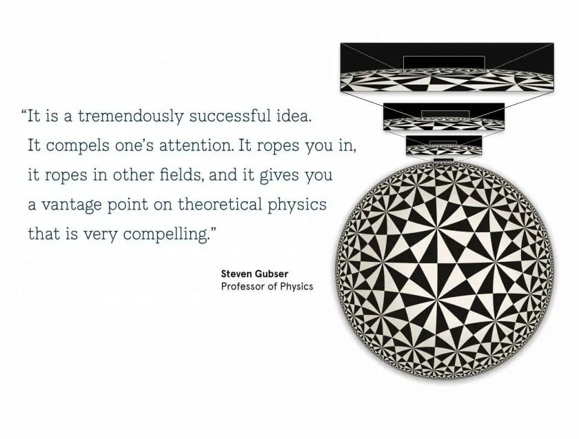
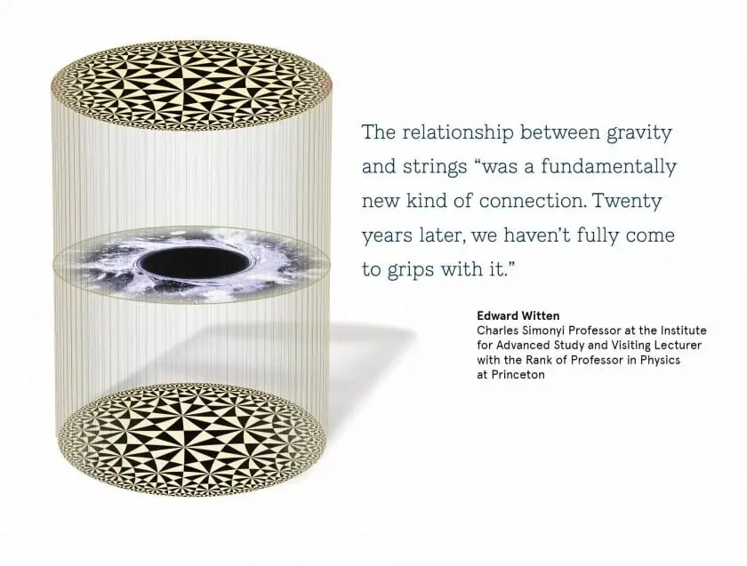

Articles ·
Beyond Einstein: Physicists find surprising connections in the cosmos
Catherine Zandonella, Office of the Dean for Research Dec. 17, 2018 noon
Albert Einstein’s desk can still be found on the second floor of Princeton’s physicsdepartment. Positioned in front of a floor-to-ceiling blackboard covered with equations, the desk seems to embody the spirit of the frizzy-haired genius as he asks the department’s current occupants, “So, have you solved it yet?”
Einstein never achieved his goal of a unified theory to explain the natural world in a single, coherent framework. Over the last century, researchers have pieced together links between three of the four known physical forces in a “standard model,” but the fourth force, gravity, has always stood alone.
No longer. Thanks to insights made by Princeton faculty members and others who trained here, gravity is being brought in from the cold — although in a manner not remotely close to how Einstein had imagined it.
Though not yet a “theory of everything,” this framework, laid down over 20 years ago and still being filled in, reveals surprising ways in which Einstein’s theory of gravity relates to other areas of physics, giving researchers new tools with which to tackle elusive questions.
The key insight is that gravity, the force that brings baseballs back to Earth and governs the growth of black holes, is mathematically relatable to the peculiar antics of the subatomic particles that make up all the matter around us.
This revelation allows scientists to use one branch of physics to understand other seemingly unrelated areas of physics. So far, this concept has been applied to topics ranging from why black holes run a temperature to how a butterfly’s beating wings can cause a storm on the other side of the world.
This relatability between gravity and subatomic particles provides a sort of Rosetta stone for physics. Ask a question about gravity, and you’ll get an explanation couched in the terms of subatomic particles. And vice versa.
“This has turned out to be an incredibly rich area,” said Igor Klebanov, Princeton’s Eugene Higgins Professor of Physics, who generated some of the initial inklings in this field in the 1990s. “It lies at the intersection of many fields of physics.”
From tiny bits of string
The seeds of this correspondence were sprinkled in the 1970s, when researchers were exploring tiny subatomic particles called quarks. These entities nest like Russian dolls inside protons, which in turn occupy the atoms that make up all matter. At the time, physicists found it odd that no matter how hard you smash two protons together, you cannot release the quarks — they stay confined inside the protons.
One person working on quark confinement was Alexander Polyakov, Princeton’s Joseph Henry Professor of Physics. It turns out that quarks are “glued together” by other particles, called gluons. For a while, researchers thought gluons could assemble into strings that tie quarks to each other. Polyakov glimpsed a link between the theory of particles and the theory of strings, but the work was, in Polyakov’s words, “hand-wavy” and he didn’t have precise examples.
Meanwhile, the idea that fundamental particles are actually tiny bits of vibrating string was taking off, and by the mid-1980s, “string theory” had lassoed the imaginations of many leading physicists. The idea is simple: just as a vibrating violin string gives rise to different notes, each string’s vibration foretells a particle’s mass and behavior. The mathematical beauty was irresistible and led to a swell of enthusiasm for string theory as a way to explain not only particles but the universe itself.
One of Polyakov’s colleagues was Klebanov, who in 1996 was an associate professor at Princeton, having earned his Ph.D. at Princeton a decade earlier. That year, Klebanov, with graduate student Steven Gubser and postdoctoral research associate Amanda Peet, used string theory to make calculations about gluons, and then compared their findings to a string-theory approach to understanding a black hole. They were surprised to find that both approaches yielded a very similar answer. A year later, Klebanov studied absorption rates by black holes and found that this time they agreed exactly.
That work was limited to the example of gluons and black holes. It took an insight by Juan Maldacena in 1997 to pull the pieces into a more general relationship. At that time, Maldacena, who had earned his Ph.D. at Princeton one year earlier, was an assistant professor at Harvard. He detected a correspondence between a special form of gravity and the theory that describes particles. Seeing the importance of Maldacena’s conjecture, a Princeton team consisting of Gubser, Klebanov and Polyakov followed up with a related paper formulating the idea in more precise terms.
Another physicist who was immediately taken with the idea was Edward Witten of the Institute for Advanced Study (IAS), an independent research center located about a mile from the University campus. He wrote a paper that further formulated the idea, and the combination of the three papers in late 1997 and early 1998 opened the floodgates.
“It was a fundamentally new kind of connection,” said Witten, a leader in the field of string theory who had earned his Ph.D. at Princeton in 1976 and is a visiting lecturer with the rank of professor in physics at Princeton. “Twenty years later, we haven’t fully come to grips with it.”

Two sides of the same coin
This relationship means that gravity and subatomic particle interactions are like two sides of the same coin. On one side is an extended version of gravity derived from Einstein’s 1915 theory of general relativity. On the other side is the theory that roughly describes the behavior of subatomic particles and their interactions.
The latter theory includes the catalogue of particles and forces in the “standard model” (see sidebar), a framework to explain matter and its interactions that has survived rigorous testing in numerous experiments, including at the Large Hadron Collider.
In the standard model, quantum behaviors are baked in. Our world, when we get down to the level of particles, is a quantum world.
Notably absent from the standard model is gravity. Yet quantum behavior is at the basis of the other three forces, so why should gravity be immune?
The new framework brings gravity into the discussion. It is not exactly the gravity we know, but a slightly warped version that includes an extra dimension. The universe we know has four dimensions, the three that pinpoint an object in space — the height, width and depth of Einstein’s desk, for example — plus the fourth dimension of time. The gravitational description adds a fifth dimension that causes spacetime to curve into a universe that includes copies of familiar four-dimensional flat space rescaled according to where they are found in the fifth dimension. This strange, curved spacetime is called anti-de Sitter (AdS) space after Einstein’s collaborator, Dutch
astronomer Willem de Sitter.
The breakthrough in the late 1990s was that mathematical calculations of the edge, or boundary, of this anti-de Sitter space can be applied to problems involving quantum behaviors of subatomic particles described by a mathematical relationship called conformal field theory (CFT). This relationship provides the link, which Polyakov had glimpsed earlier, between the theory of particles in four space-time dimensions and string theory in five dimensions. The relationship now goes by several names that relate gravity to particles, but most researchers call it the AdS/CFT (pronounced A-D-S-C-F-T) correspondence.

Tackling the big questions
This correspondence, it turns out, has many practical uses. Take black holes, for example. The late physicist Stephen Hawking startled the physics community by discovering that black holes have a temperature that arises because each particle that falls into a black hole has an entangled particle that can escape as heat.
Using AdS/CFT, Tadashi Takayanagi and Shinsei Ryu, then at the University of California-Santa Barbara, discovered a new way to study
entanglement in terms of geometry, extending Hawking’s insights in a fashion that experts consider quite remarkable.
In another example, researchers are using AdS/CFT to pin down chaos theory, which says that a random and insignificant event such as the flapping of a butterfly’s wings could result in massive changes to a large-scale system such as a faraway hurricane. It is difficult to calculate chaos, but black holes — which are some of the most chaotic quantum systems possible — could help. Work by Stephen Shenker and Douglas Stanford at Stanford University, along with Maldacena, demonstrates how, through AdS/CFT, black holes can model quantum chaos.
One open question Maldacena hopes the AdS/CFT correspondence will answer is the question of what it is like inside a black hole, where an infinitely dense region called a singularity resides. So far, the relationship gives us a picture of the black hole as seen from the outside, said Maldacena, who is now the Carl P. Feinberg Professor at IAS.
“We hope to understand the singularity inside the black hole,” Maldacena said. “Understanding this would probably lead to interesting lessons for the Big Bang.”
The relationship between gravity and strings has also shed new light on quark confinement, initially through work by Polyakov and Witten, and later by Klebanov and Matt Strassler, who was then at IAS.
Those are just a few examples of how the relationship can be used. “It is a tremendously successful idea,” said Gubser, who today is a professor of physics at Princeton. “It compels one’s attention. It ropes you in, it ropes in other fields, and it gives you a vantage point on theoretical physics that is very compelling.”
The relationship may even unlock the quantum nature of gravity. “It is among our best clues to understand gravity from a quantum perspective,” said Witten. “Since we don’t know what is still missing, I cannot tell you how big a piece of the picture it ultimately will be.”
Migrated from the AUASS website archive as published, with the formatting tidied.